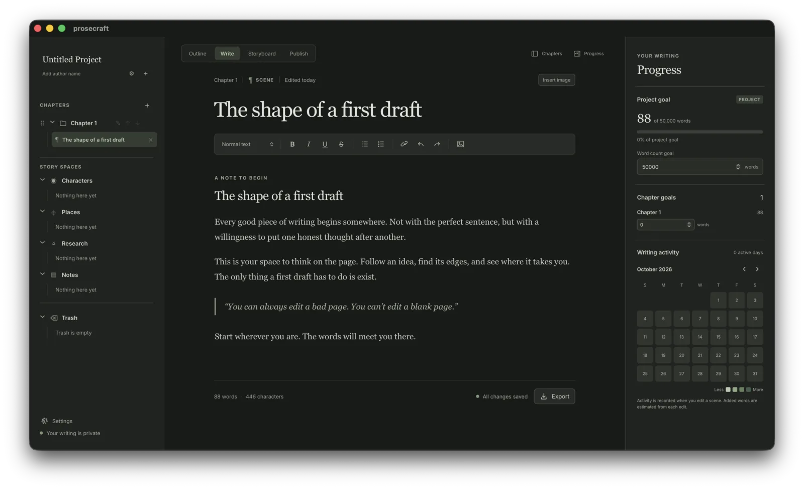
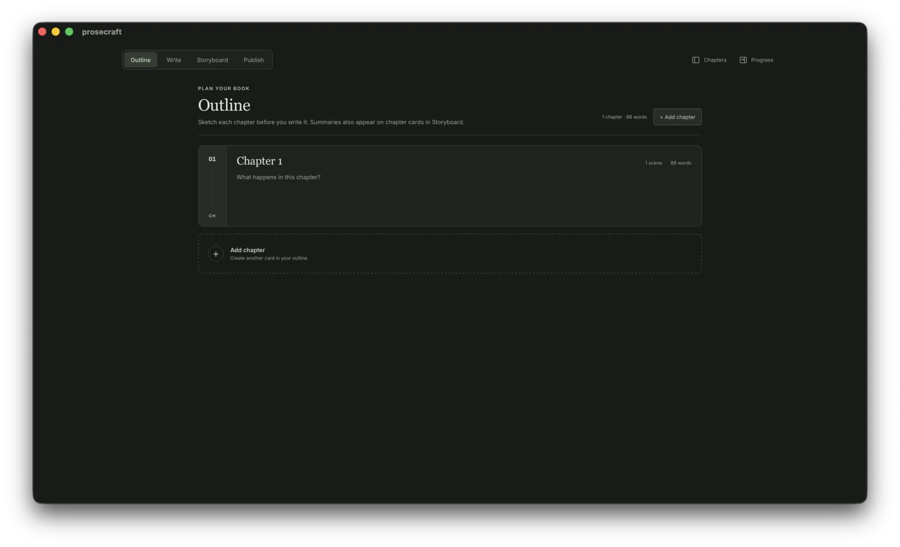
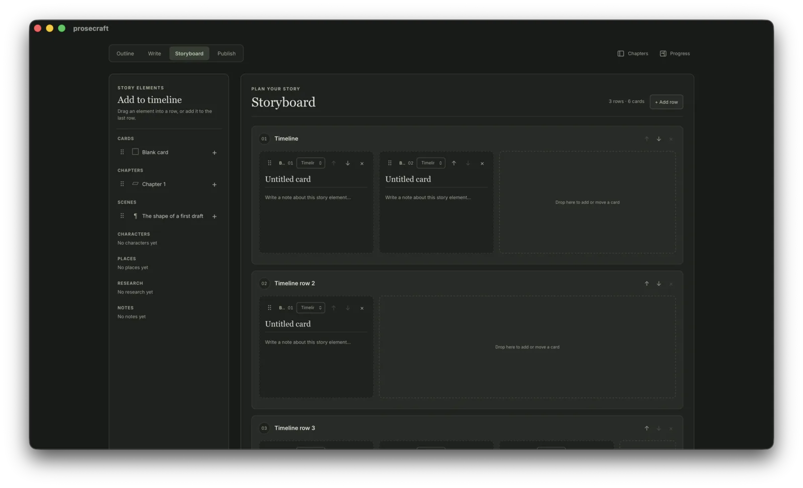
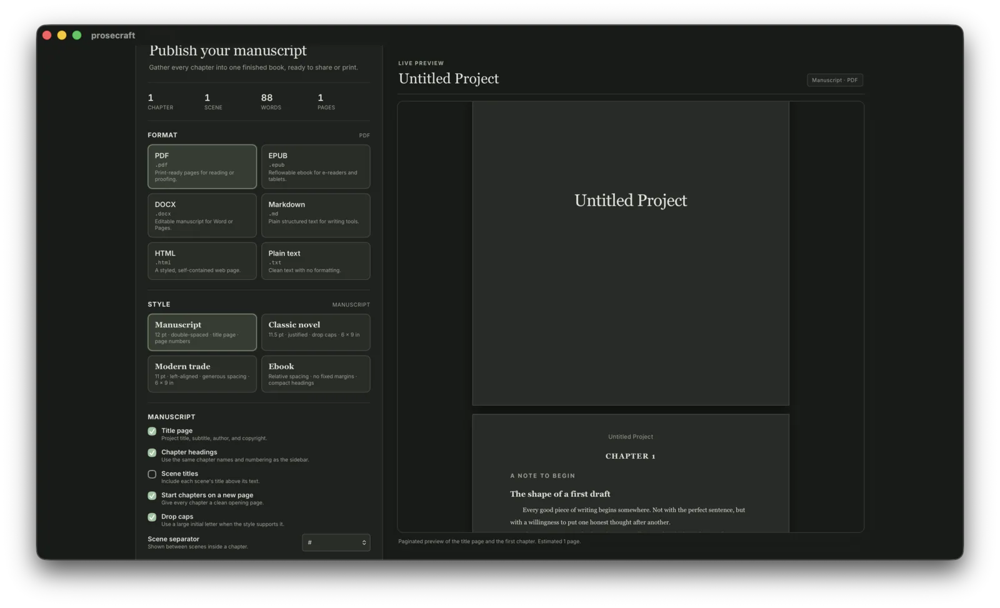

Outline
- Chapter-by-chapter outline with goals and progress
- Freeform, pannable storyboard canvas
- Timeline view for plot and chronology
- Character and place templates
A novel-writing app for the desktop
ProseCraft is a novel-writing app, with tools for outlining, storyboarding, and organizing your writing. When you feel your project is ready, export it into a variety of formats with granular control.



